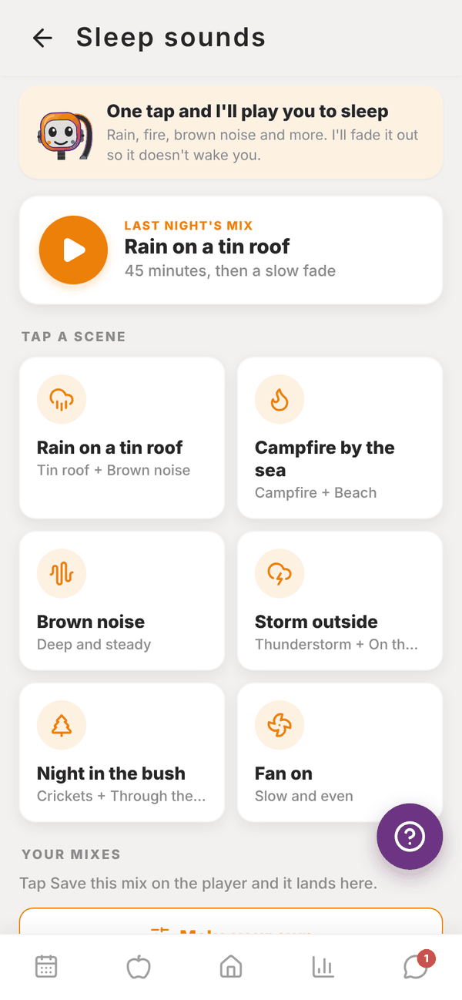
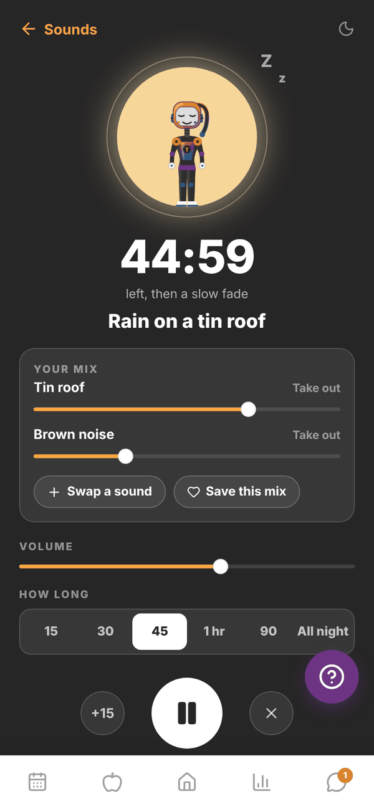

Totality for clients
Sleep sounds
One tap plays a ready made scene or last night's mix, or make and save your own, with a timer that fades out once you're asleep.
Sleep sounds play calming sounds while you drift off: rain, wind, water, fire, night sounds, hums and noise. It's free for every client.
On Home, scroll to MORE and tap Sleep sounds.


One tap and play#
- LAST NIGHT'S MIX: one big play button for whatever you played last time.
- TAP A SCENE: six ready made mixes that start straight away. Rain on a tin roof, Campfire by the sea, Brown noise, Storm outside, Night in the bush and Fan on.
- YOUR MIXES: mixes you've saved.
- Make your own: build a mix from 35 sounds.
- HOW LONG: 15 min, 30 min, 45 min, 1 hour, 90 min or all night, with an optional slow fade at the end.
The player#
Each sound in YOUR MIX has its own slider, and the mix changes as it plays. Take out drops a sound. Add a sound (or Swap a sound), Save this mix, VOLUME, HOW LONG, +15, pause and stop are all on the player.
Make your own#
Tap a category (Noise, Rain, Wind, Water, Fire, Night or Hum), then tap a sound. It joins the mix and starts playing. Tap it again and it leaves. Two sounds play at once.
In the phone app it keeps playing with the screen off. In a browser, keep the tab open.
Questions#
Does it cost anything?
No. Sleep sounds are free.
Can my trainer see what I listen to?
No. Sleep sounds are just for you.